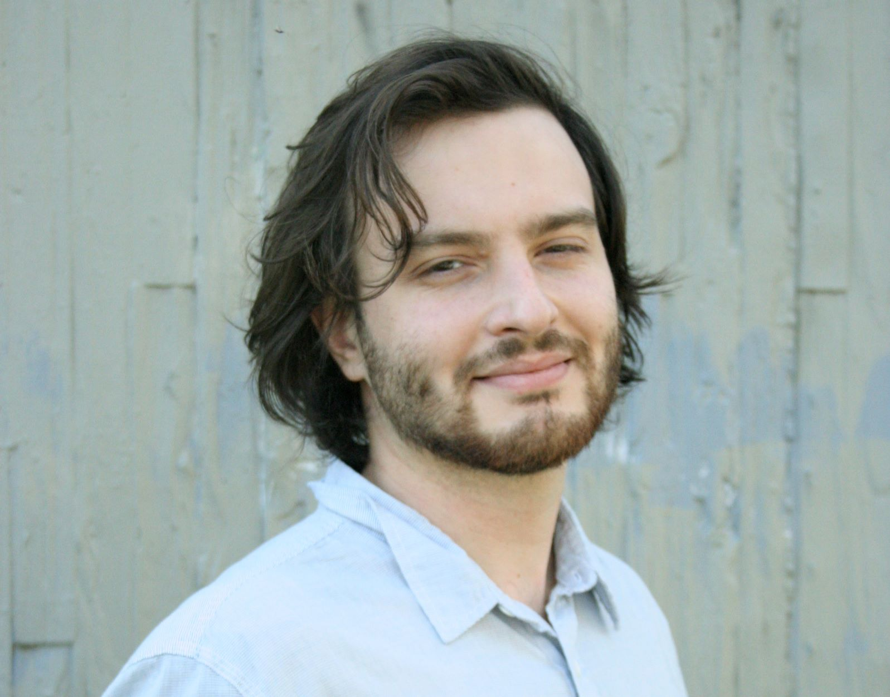

Giancarlo Fiorenzo is a multimedia artist based in Eugene, Oregon.
Fiorenzo uses 3D modeling software alongside real-time game engines to create simulations with a focus on social and environmental commentary.
Fiorenzo has exhibited paintings across America, most recently at Shaneland Arts in Phoenix, Arizona, as part of the group show About Face.
Fiorenzo is currently working with the Deep AI text generator to create an infinite living environment that reacts
to artificially generated responses regarding environmental concerns.
